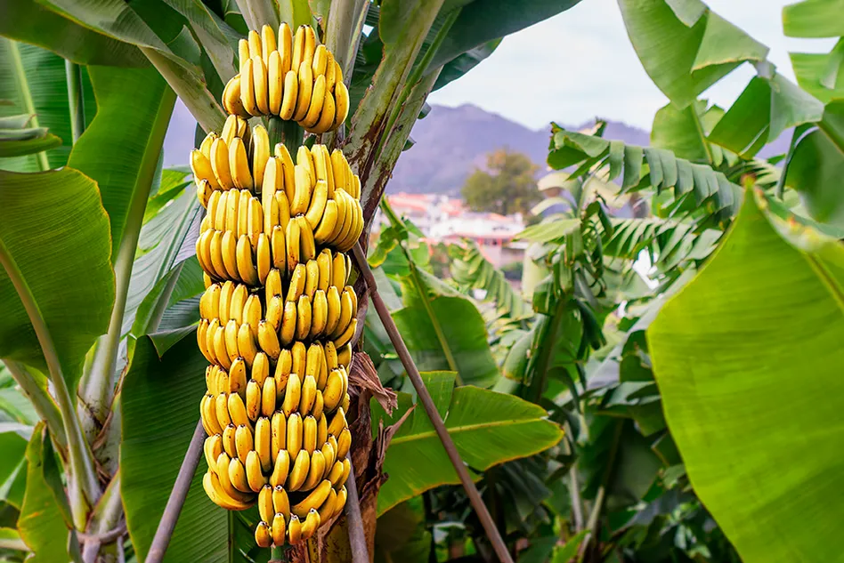
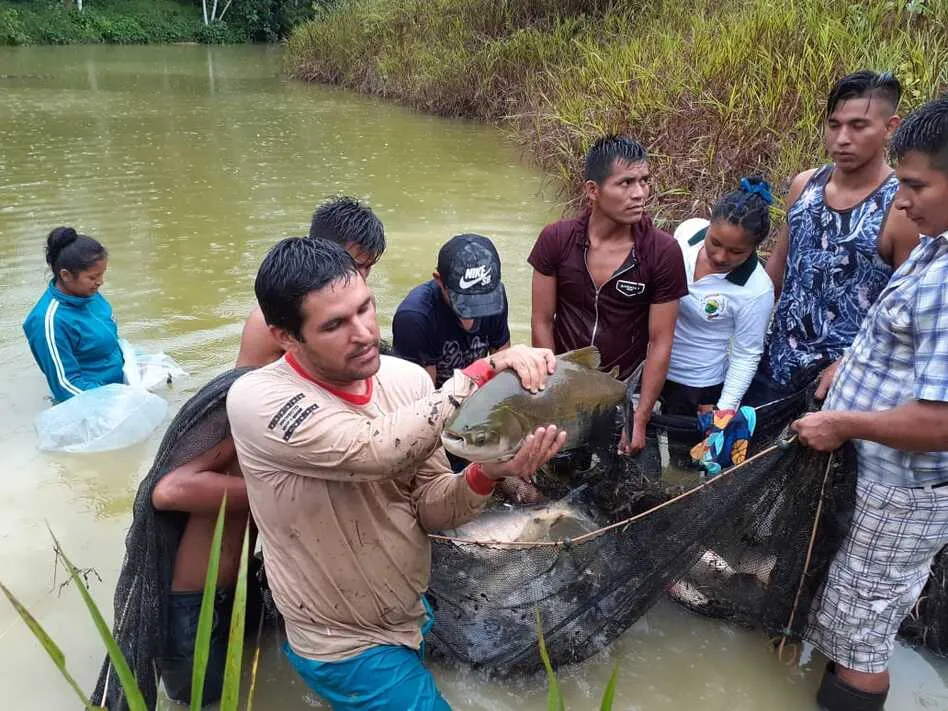
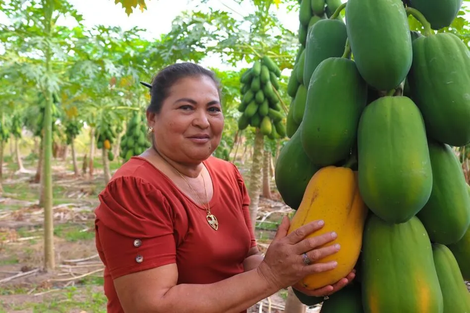
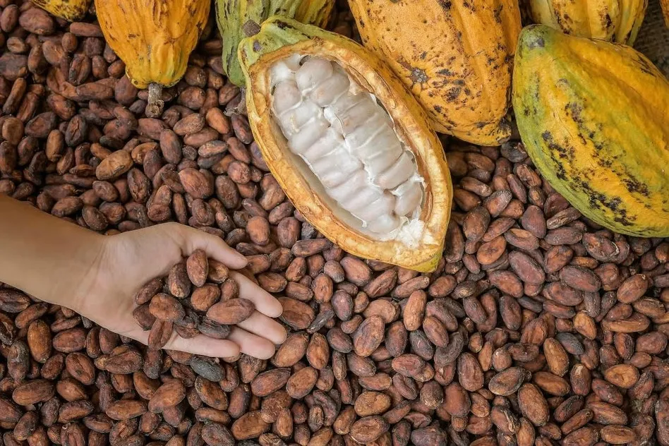

Improved breed cattle raised in Puerto Inca

Bananas are a product with high demandIn Puerto Inca, yellow or brown corn is harvested

Pacotana raised on fish farms

Papaya cultivation is spreading more and more

Cocoa is cultivated by many families